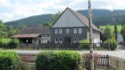

The Kleinsorge Family Tree - Family Card
The Kleinsorge Family Tree - Family Card
SPRENGER, Johnannes(Jan 15, 1668 - Apr 22, 1745)PIEPER, Johann Hermann(1664 - Dec 14, 1744)
GERWIN, Anna Catharina(Jan 26, 1670 - 1742)Elisabeth
m. Aug 1, 1741, Berghausen, Germany

b. Aug 10, 1703, Ebbinghof, Germany
d. Sep 20, 1757, Heiminghausen, Schmallenberg, Germany
ado.

b. Aug 23, 1705, Schmallenberg-Mailar
d. Apr 21, 1780, Heiminghausen, Schmallenberg, Germany
ado.
Children
GERWIN, Johann A.(1743 - 1814)
> FÖMPE, Maria Margarethe(Oct 28, 1748 - Mar 26, 1804)